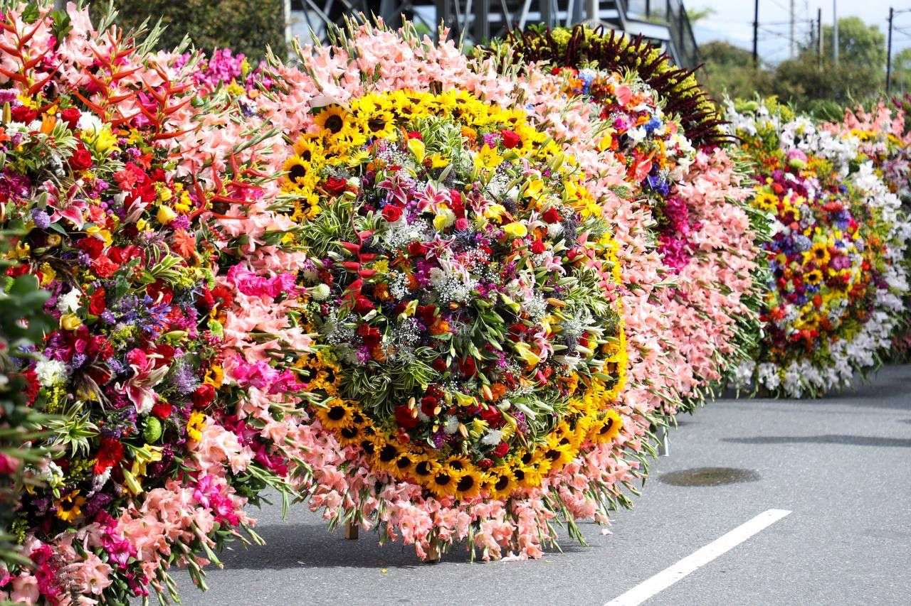
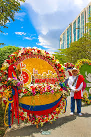

Feria de las Flores
Descripcion historica del evento
La Feria de las Flores es el evento mas importante de Medellin y uno de los mas reconocidos de Colombia. Nacio en 1957 como iniciativa para dar a conocer la riqueza floral del Oriente Antioqueno. Cada agosto la ciudad celebra durante diez dias con desfiles, conciertos y exposiciones llenas de color.
Danzas y vestuarios
El elemento mas iconico son los silleteros: campesinos que bajan desde las montanas cargando enormes arreglos florales en sus espaldas que pueden pesar mas de 60 kilos. Los vestuarios campesinos tradicionales y las danzas folkloricas complementan el espectaculo.
Importancia cultural
La feria representa el vinculo entre Medellin y sus raices rurales, honrando a las familias silleteras que han transmitido este arte de generacion en generacion. Es simbolo de la transformacion positiva de la ciudad.
Galeria de imagenes

